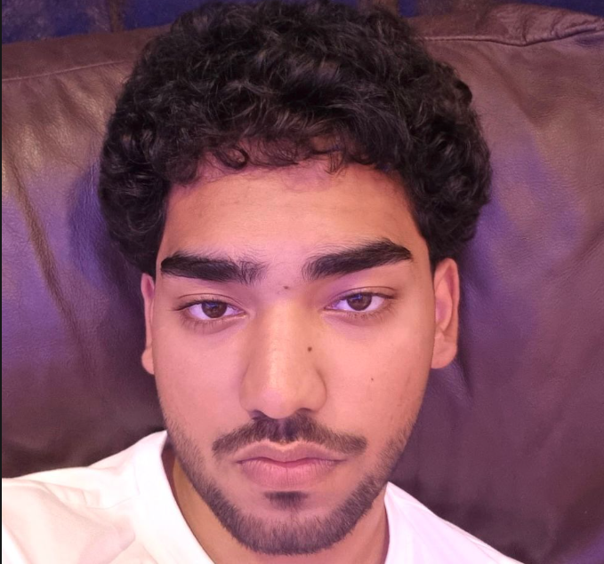

Muhammad Mutaza

summary
I'm a computer engineering student who's passionate about technology,
problem-solving, and building things that make a difference. Right now,
I'm developing my skills in web development and working on personal projects to sharpen my craft.
Alongside my studies, I'm also exploring AI and business opportunities,
with the goal of combining technical knowledge and entrepreneurship to create meaningful work.
Education
- BEng computer engineer-Middlesex University dubai (expected 2025-2028)
- foundation in Information Technology-Murdoch university dubai (2024-2025)
- AS levels (private candidate)-British council (2023-2024)
- IGSE/O levels-Shajrah British International School (2022-2023)
Work Experience
- Passenger Services Coordinator-dubai International Airport
6 days
- Guided passengers to transportation and assisted with directions across airport terminals
- Communicated instructions clearly in a fast-paced, multicultural environment
- Developed customer service, problem-solving, and front-line support skills
- Event Support Team Member-Local Events and campaigns
2 weeks
- Assisted with event coordination, ensuring smooth team collaboration and task execution
- Interacted with attendees, supported staff, and contributed to successful event delivery
- Gained valuable experience in teamwork, adaptability, and time management
projects
- Birthday invite page - A simple HTML-only webpage using headings, images, and lists.view
- movie list - A very simple HTML- only webpage that started my HTML-5 Journy.view
Skills
- HTML5 and Semantic Markup
- Communication & Teamwork
- Problem solving skills
- Time Management
Certification
Angela Yu's Web developement Bootcamp-Udemy.com
(2025)
Get in touch